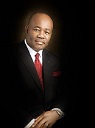

Akpabio Humiliated in crushing election defeat

Godswill Akpabio has lost his reelection bid into the Nigerian Senate
This comes a year after he switched to the ruling Party APC
PDP won all the state house of assembly sits in Akwa Ibom
and also the Governorship victory went to PDP